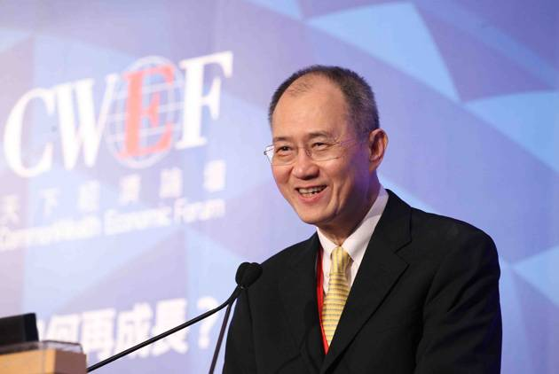
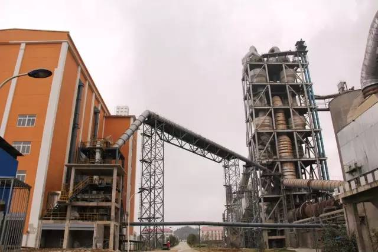
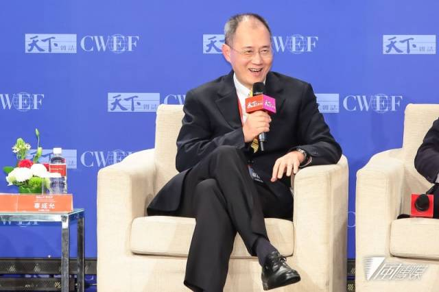

台泥董事长辜成允近日在“2016天下经济论坛”(CommonWealth Economic Forum) 的专题论坛“巴黎会议后的绿色经济”发表演说。他表示，绿色商机的实践起源自15年前，“我父亲说我们要成为环保服务生，才能扭转社会的误解”，所以决定朝环保发展，把过去从负面看环保的外部成本内化成责任，开启绿色长征之路。从环保大户走到循环经济，走的是“儒商”精神，努力让商业利益跟社会利益正向结合，把环保服务变成新商机。正是这样的理念，支持台泥成为了台湾最大的环保服务公司。
辜成允指出，台泥已成为台湾最大环保服务公司，全台湾每5个人就有1个人的家庭垃圾由台泥处理；另外，包括台积电在内，台泥也是新竹科学园区最主要的废弃物处理厂，晶圆厂、面板厂难以处理的废溶剂、氟化钙，都是送到台泥的水泥厂进行处理。
台泥每年为台湾减碳量相当于1000座大安森林公园。位于花莲和平厂的钙回路(Calcium Looping)工厂，是全球最大的钙回路碳捕捉工厂；此项与工研院合作的钙回路技术，更荣膺全球百大科技研发奖。
他表示，台泥走到今天是长达15年的绿色长征，契机是15年前某一天。“报纸用很大的标题说，水泥业是环保大户(指高污染的业者)，我马上跑去找老董事长(我父亲)报告，是不是发新闻稿或开记者会说明我们已经不是大家刻板印象中的环保大户”。
辜成允进一步表示，“我父亲说不要；大家之所以会那样误会，就是因为我们做得不够，我们要成为环保服务生，才能扭转社会的误解。所以我们决定朝环保发展，把过去的外部成本内化成为我们的责任”。例如，花莲的矿山采矿是在山顶挖洞，这样不需要直接砍树，还要开道路运下来；现在是采矿之后直接把扩石从密闭的山洞往下丢，用重力加速度方式让矿石自然破碎，减少能源的消耗，由于完全密闭也不会有噪音与污染。

辜成允表示，当初政府在花莲和平规划水泥专区，后来只有台泥愿意投资，因此政府决定如果台泥要投资就要自己盖港口。于是台泥朝循环经济的方向发展，做三合一的规划整合港口、发电厂和水泥厂，做到这一站的废弃物是下一站的原料，台泥发电厂没有灰塘，煤炭烧完的飞灰、底灰，脱硫后的石膏，原本是废弃物，都变成进到水泥窑的原料。
在中国最新的工厂，更把焚化炉跟水泥窑结合，盖焚化炉烧生活垃圾，过去一般垃圾焚化炉温度只达700度，会产生戴奥辛的问题，需要加温后燃提高温度来解决，现在把焚化炉跟水泥窑盖在一起，水泥窑本身要烧到1400度，就不会产生戴奥辛，垃圾烧完之后的金属灰渣，拿去生产水泥，烧垃圾与烧水泥的余热拿去发电。
辜成允强调，在这样的循环经济中，除了二氧化碳没办法有效处理外，其他都能有效处理。二氧化碳是绿色零排放的最后一里路，也是全球看好的商机。台泥积极投入二氧化碳处理，目标是做到环保价值链，在2018年前要扩大花莲和平厂钙回路捕捉工厂，把水泥厂排放的二氧化碳捕捉，成为养殖藻类的原料，进而提炼生质能源及化妆保养品的虾红色原料。
辜成允指出，台泥为什么能从环保大户走到循环经济，因为走的是“儒商”的精神，提倡正能量的经济，努力让商业利益跟社会利益正向结合。企业努力投资环保与研发、让生物多样性，让社会更好，企业也能成长与茁壮，把环保服务变成一种新商机。